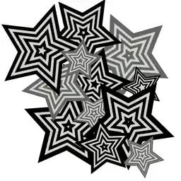

跳到主要内容

TAKE YOUR TIME
CHANGING TARGET...
★
同好据点
AFTER SCHOOL CLUB
幻
幻影动漫社
星海大学 · 示例社团
AUTH
未配置后端
♪
SOUND
OFF
✉
0
-- / --
---
北京时间
COMMAND
据点
HIDEOUT
01
活动
MISSION
02
同好
LINK
03
我的
PROFILE
04
据点顾问
放学后的时间，可别浪费在无聊上。
▼
MENU
△
PHANTOM
NETWORK
×